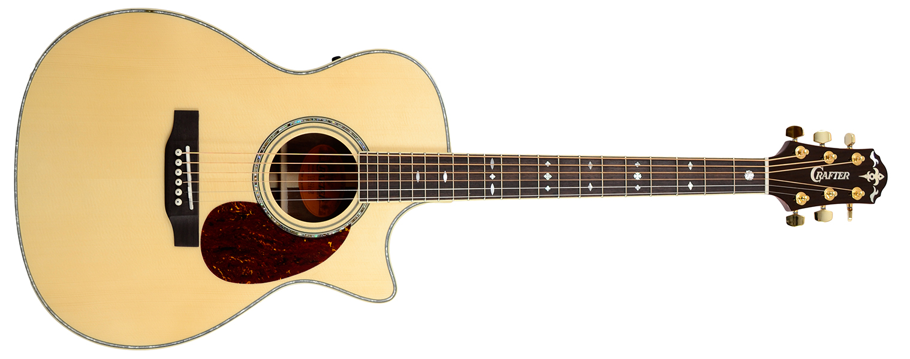
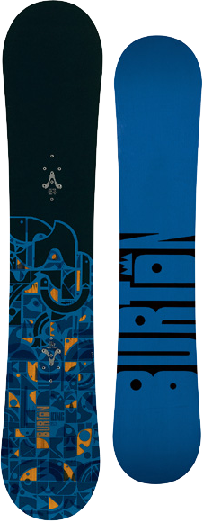

Hi, I'm Braden.
I'm a developer.
And I'm a Master's student of Information Systems Management at 
These days I work mainly on the front-end, building beautiful web applications.
Here are some of the technologies I work with everyday:
Here are some other technologies that I've worked with:
I've worked in a couple of different places. I currently work here:
I build out the front-end for web applications. The majority of my work is building new features, and then testing those features and fixing the bugs.
We use cutting-edge technologies such as Angular.js, ES2015 with Babel, and web components.
I was employee #10, so that's pretty cool.
I previously worked at this place:
It was here that I cut my teeth building web applications.
I was in charge of multiple web application components, also built with Javascript and Angular.js.
I also used Bootstrap extensively.
I do other things than just work and study though, too.
I love sports. Take, for example, Ultimate Frisbee.
Music is excellent. This is my guitar. 
The outdoors is very refreshing, I snowboard using this guy. 
My church plays a significant part in my life.
So that's me. Maybe boring, but that's okay.
See ya.